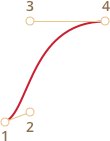
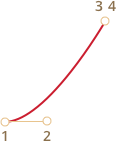
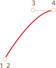
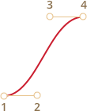

CSS animations allow to do simple animations without JavaScript at all.
JavaScript can be used to control CSS animation and make them even better with a little of code.
CSS transitions
The idea of CSS transitions is simple. We describe a property and how its changes should be animated. When the property changes, the browser paints the animation.
That is: all we need is to change the property. And the fluent transition is made by the browser.
For instance, the CSS below animates changes of background-color for 3 seconds:
.animated {
transition-property: background-color;
transition-duration: 3s;
}Now if an element has .animated class, any change of background-color is animated during 3 seconds.
Click the button below to animate the background:
<button id="color">Click me</button>
<style>
#color {
transition-property: background-color;
transition-duration: 3s;
}
</style>
<script>
color.onclick = function() {
this.style.backgroundColor = 'red';
};
</script>There are 4 properties to describe CSS transitions:
transition-propertytransition-durationtransition-timing-functiontransition-delay
We’ll cover them in a moment, for now let’s note that the common transition property allows to declare them together in the order: property duration timing-function delay, and also animate multiple properties at once.
For instance, this button animates both color and font-size:
<button id="growing">Click me</button>
<style>
#growing {
transition: font-size 3s, color 2s;
}
</style>
<script>
growing.onclick = function() {
this.style.fontSize = '36px';
this.style.color = 'red';
};
</script>Now let’s cover animation properties one by one.
transition-property
In transition-property we write a list of property to animate, for instance: left, margin-left, height, color.
Not all properties can be animated, but many of them. The value all means “animate all properties”.
transition-duration
In transition-duration we can specify how long the animation should take. The time should be in CSS time format: in seconds s or milliseconds ms.
transition-delay
In transition-delay we can specify the delay before the animation. For instance, if transition-delay: 1s, then animation starts after 1 second after the change.
Negative values are also possible. Then the animation starts from the middle. For instance, if transition-duration is 2s, and the delay is -1s, then the animation takes 1 second and starts from the half.
Here’s the animation shifts numbers from 0 to 9 using CSS translate property:
stripe.onclick = function() {
stripe.classList.add('animate');
};#digit {
width: .5em;
overflow: hidden;
font: 32px monospace;
cursor: pointer;
}
#stripe {
display: inline-block
}
#stripe.animate {
transform: translate(-90%);
transition-property: transform;
transition-duration: 9s;
transition-timing-function: linear;
}<!doctype html>
<html>
<head>
<meta charset="UTF-8">
<link rel="stylesheet" href="style.css">
</head>
<body>
Click below to animate:
<div id="digit"><div id="stripe">0123456789</div></div>
<script src="script.js"></script>
</body>
</html>The transform property is animated like this:
#stripe.animate {
transform: translate(-90%);
transition-property: transform;
transition-duration: 9s;
}In the example above JavaScript adds the class .animate to the element – and the animation starts:
stripe.classList.add('animate');We can also start it “from the middle”, from the exact number, e.g. corresponding to the current second, using the negative transition-delay.
Here if you click the digit – it starts the animation from the current second:
stripe.onclick = function() {
let sec = new Date().getSeconds() % 10;
stripe.style.transitionDelay = '-' + sec + 's';
stripe.classList.add('animate');
};#digit {
width: .5em;
overflow: hidden;
font: 32px monospace;
cursor: pointer;
}
#stripe {
display: inline-block
}
#stripe.animate {
transform: translate(-90%);
transition-property: transform;
transition-duration: 9s;
transition-timing-function: linear;
}<!doctype html>
<html>
<head>
<meta charset="UTF-8">
<link rel="stylesheet" href="style.css">
</head>
<body>
Click below to animate:
<div id="digit"><div id="stripe">0123456789</div></div>
<script src="script.js"></script>
</body>
</html>JavaScript does it by an extra line:
stripe.onclick = function() {
let sec = new Date().getSeconds() % 10;
// for instance, -3s here starts the animation from the 3rd second
stripe.style.transitionDelay = '-' + sec + 's';
stripe.classList.add('animate');
};transition-timing-function
Timing function describes how the animation process is distributed along the time. Will it start slowly and then go fast or vise versa.
That’s the most complicated property from the first sight. But it becomes very simple if we devote a bit time to it.
That property accepts two kinds of values: a Bezier curve or steps. Let’s start from the curve, as it’s used more often.
Bezier curve
The timing function can be set as a Bezier curve with 4 control points that satisfies the conditions:
- First control point:
(0,0). - Last control point:
(1,1). - For intermediate points values of
xmust be in the interval0..1,ycan be anything.
The syntax for a Bezier curve in CSS: cubic-bezier(x2, y2, x3, y3). Here we need to specify only 2nd and 3rd control points, because the 1st one is fixed to (0,0) and the 4th one is (1,1).
The timing function describes how fast the animation process goes in time.
- The
xaxis is the time:0– the starting moment,1– the last moment oftransition-duration. - The
yaxis specifies the completion of the process:0– the starting value of the property,1– the final value.
The simplest variant is when the animation goes uniformly, with the same linear speed. That can be specified by the curve cubic-bezier(0, 0, 1, 1).
Here’s how that curve looks:
…As we can see, it’s just a straight line. As the time (x) passes, the completion (y) of the animation steadily goes from 0 to 1.
The train in the example below goes from left to right with the permanent speed (click it):
.train {
position: relative;
cursor: pointer;
width: 177px;
height: 160px;
left: 0;
transition: left 5s cubic-bezier(0, 0, 1, 1);
}<!doctype html>
<html>
<head>
<meta charset="UTF-8">
<link rel="stylesheet" href="style.css">
</head>
<body>
<img class="train" src="https://js.cx/clipart/train.gif" onclick="this.style.left='450px'">
</body>
</html>The CSS transition is based on that curve:
.train {
left: 0;
transition: left 5s cubic-bezier(0, 0, 1, 1);
/* JavaScript sets left to 450px */
}…And how can we show a train slowing down?
We can use another Bezier curve: cubic-bezier(0.0, 0.5, 0.5 ,1.0).
The graph:
As we can see, the process starts fast: the curve soars up high, and then slower and slower.
Here’s the timing function in action (click the train):
.train {
position: relative;
cursor: pointer;
width: 177px;
height: 160px;
left: 0px;
transition: left 5s cubic-bezier(0.0, 0.5, 0.5, 1.0);
}<!doctype html>
<html>
<head>
<meta charset="UTF-8">
<link rel="stylesheet" href="style.css">
</head>
<body>
<img class="train" src="https://js.cx/clipart/train.gif" onclick="this.style.left='450px'">
</body>
</html>CSS:
.train {
left: 0;
transition: left 5s cubic-bezier(0, .5, .5, 1);
/* JavaScript sets left to 450px */
}There are several built-in curves: linear, ease, ease-in, ease-out and ease-in-out.
The linear is a shorthand for cubic-bezier(0, 0, 1, 1) – a straight line, we saw it already.
Other names are shorthands for the following cubic-bezier:
ease* |
ease-in |
ease-out |
ease-in-out |
|---|---|---|---|
(0.25, 0.1, 0.25, 1.0) |
(0.42, 0, 1.0, 1.0) |
(0, 0, 0.58, 1.0) |
(0.42, 0, 0.58, 1.0) |

|

|

|

|
* – by default, if there’s no timing function, ease is used.
So we could use ease-out for our slowing down train:
.train {
left: 0;
transition: left 5s ease-out;
/* transition: left 5s cubic-bezier(0, .5, .5, 1); */
}But it looks a bit differently.
A Bezier curve can make the animation “jump out” of its range.
The control points on the curve can have any y coordinates: even negative or huge. Then the Bezier curve would also jump very low or high, making the animation go beyond its normal range.
In the example below the animation code is:
.train {
left: 100px;
transition: left 5s cubic-bezier(.5, -1, .5, 2);
/* JavaScript sets left to 400px */
}The property left should animate from 100px to 400px.
But if you click the train, you’ll see that:
- First, the train goes back:
leftbecomes less than100px. - Then it goes forward, a little bit farther than
400px. - And then back again – to
400px.
.train {
position: relative;
cursor: pointer;
width: 177px;
height: 160px;
left: 100px;
transition: left 5s cubic-bezier(.5, -1, .5, 2);
}<!doctype html>
<html>
<head>
<meta charset="UTF-8">
<link rel="stylesheet" href="style.css">
</head>
<body>
<img class="train" src="https://js.cx/clipart/train.gif" onclick="this.style.left='400px'">
</body>
</html>Why it happens – pretty obvious if we look at the graph of the given Bezier curve:
We moved the y coordinate of the 2nd point below zero, and for the 3rd point we made put it over 1, so the curve goes out of the “regular” quadrant. The y is out of the “standard” range 0..1.
As we know, y measures “the completion of the animation process”. The value y = 0 corresponds to the starting property value and y = 1 – the ending value. So values y<0 move the property lower than the starting left and y>1 – over the final left.
That’s a “soft” variant for sure. If we put y values like -99 and 99 then the train would jump out of the range much more.
But how to make the Bezier curve for a specific task? There are many tools. For instance, we can do it on the site http://cubic-bezier.com/.
Steps
Timing function steps(number of steps[, start/end]) allows to split animation into steps.
Let’s see that in an example with digits.
Here’s a list of digits, without any animations, just as a source:
#digit {
border: 1px solid red;
width: 1.2em;
}
#stripe {
display: inline-block;
font: 32px monospace;
}<!DOCTYPE html>
<html>
<head>
<meta charset="utf-8">
<link rel="stylesheet" href="style.css">
</head>
<body>
<div id="digit"><div id="stripe">0123456789</div></div>
</body>
</html>We’ll make the digits appear in a discrete way by making the part of the list outside of the red “window” invisible and shifting the list to the left with each step.
There will be 9 steps, a step-move for each digit:
#stripe.animate {
transform: translate(-90%);
transition: transform 9s steps(9, start);
}In action:
#digit {
width: .5em;
overflow: hidden;
font: 32px monospace;
cursor: pointer;
}
#stripe {
display: inline-block
}
#stripe.animate {
transform: translate(-90%);
transition-property: transform;
transition-duration: 9s;
transition-timing-function: steps(9, start);
}<!DOCTYPE html>
<html>
<head>
<meta charset="utf-8">
<link rel="stylesheet" href="style.css">
</head>
<body>
Click below to animate:
<div id="digit"><div id="stripe">0123456789</div></div>
<script>
digit.onclick = function() {
stripe.classList.add('animate');
}
</script>
</body>
</html>The first argument of steps(9, start) is the number of steps. The transform will be split into 9 parts (10% each). The time interval is automatically divided into 9 parts as well, so transition: 9s gives us 9 seconds for the whole animation – 1 second per digit.
The second argument is one of two words: start or end.
The start means that in the beginning of animation we need to do make the first step immediately.
We can observe that during the animation: when we click on the digit it changes to 1 (the first step) immediately, and then changes in the beginning of the next second.
The process is progressing like this:
0s–-10%(first change in the beginning of the 1st second, immediately)1s–-20%- …
8s–-80%- (the last second shows the final value).
The alternative value end would mean that the change should be applied not in the beginning, but at the end of each second.
So the process would go like this:
0s–01s–-10%(first change at the end of the 1st second)2s–-20%- …
9s–-90%
Here’s step(9, end) in action (note the pause between the first digit change):
#digit {
width: .5em;
overflow: hidden;
font: 32px monospace;
cursor: pointer;
}
#stripe {
display: inline-block
}
#stripe.animate {
transform: translate(-90%);
transition-property: transform;
transition-duration: 9s;
transition-timing-function: steps(9, end);
}<!DOCTYPE html>
<html>
<head>
<meta charset="utf-8">
<link rel="stylesheet" href="style.css">
</head>
<body>
Click below to animate:
<div id="digit"><div id="stripe">0123456789</div></div>
<script>
digit.onclick = function() {
stripe.classList.add('animate');
}
</script>
</body>
</html>There are also shorthand values:
step-start– is the same assteps(1, start). That is, the animation starts immediately and takes 1 step. So it starts and finishes immediately, as if there were no animation.step-end– the same assteps(1, end): make the animation in a single step at the end oftransition-duration.
These values are rarely used, because that’s not really animation, but rather a single-step change.
Event transitionend
When the CSS animation finishes the transitionend event triggers.
It is widely used to do an action after the animation is done. Also we can join animations.
For instance, the ship in the example below starts to swim there and back on click, each time farther and farther to the right:
The animation is initiated by the function go that re-runs each time when the transition finishes and flips the direction:
boat.onclick = function() {
//...
let times = 1;
function go() {
if (times % 2) {
// swim to the right
boat.classList.remove('back');
boat.style.marginLeft = 100 * times + 200 + 'px';
} else {
// swim to the left
boat.classList.add('back');
boat.style.marginLeft = 100 * times - 200 + 'px';
}
}
go();
boat.addEventListener('transitionend', function() {
times++;
go();
});
};The event object for transitionend has few specific properties:
event.propertyName- The property that has finished animating. Can be good if we animate multiple properties simultaneously.
event.elapsedTime- The time (in seconds) that the animation took, without
transition-delay.
Keyframes
We can join multiple simple animations together using the @keyframes CSS rule.
It specifies the “name” of the animation and rules: what, when and where to animate. Then using the animation property we attach the animation to the element and specify additional parameters for it.
Here’s an example with explanations:
<div class="progress"></div>
<style>
@keyframes go-left-right { /* give it a name: "go-left-right" */
from { left: 0px; } /* animate from left: 0px */
to { left: calc(100% - 50px); } /* animate to left: 100%-50px */
}
.progress {
animation: go-left-right 3s infinite alternate;
/* apply the animation "go-left-right" to the element
duration 3 seconds
number of times: infinite
alternate direction every time
*/
position: relative;
border: 2px solid green;
width: 50px;
height: 20px;
background: lime;
}
</style>There are many articles about @keyframes and a detailed specification.
Probably you won’t need @keyframes often, unless everything is in the constant move on your sites.
Summary
CSS animations allow to smoothly (or not) animate changes of one or multiple CSS properties.
They are good for most animation tasks. We’re also able to use JavaScript for animations, the next chapter is devoted to that.
Limitations of CSS animations compared to JavaScript animations:
- Simple things done simply.
- Fast and lightweight for CPU.
- JavaScript animations are flexible. They can implement any animation logic, like an “explosion” of an element.
- Not just property changes. We can create new elements in JavaScript for purposes of animation.
The majority of animations can be implemented using CSS as described in this chapter. And transitionend event allows to run JavaScript after the animation, so it integrates fine with the code.
But in the next chapter we’ll do some JavaScript animations to cover more complex cases.
Comments
<code>tag, for several lines – use<pre>, for more than 10 lines – use a sandbox (plnkr, JSBin, codepen…)